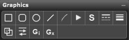

Palette Overview

The following describes each of the tools in the Graphics palette:
- Rectangle. Use this symbol to draw a rectangle.
- Rounded Rectangle. Use this symbol to a rectangle with rounded corners.
- Oval. Use this symbol to draw an oval or circle.
- Line. Use this symbol draw lines.
- Curve. Use this symbol to draw curves.
- Wedge. Use this symbol to draw a wedge.
- Symbol Tool. Use this symbol to enter characters from another font.
- Solid, Dashed, or Dotted. Use this setting to set the line type.
- Line Thickness. Use this setting to set the line thickness of graphic symbols.
- Opaque or Transparent. Use this setting to set whether graphics symbols are opaque or transparent.
- Line attributes. Use this setting to set the line's beginning and end attributes.
- Graphics Import. Use this tool to import a graphic image onto your score.
- Graphics Export. Use this tool to export part of your score as a graphic image.
Using the Graphics Palette
You can put the shapes anywhere in the Score View. Although this does not connect them to notes, it connects them to a track. The track containing the cursor when you finish drawing or moving a graphic owns that graphic.
Overture extracts graphics only with the track that owns them. All Graphics palette shapes print with PostScript printing attributes.
The solid, dashed, dotted, and thickness attributes affect lines (straight and curved), and borders for the rectangles and oval. Shift-dragging to create a rectangle (rounded or regular) or oval constrains the shape to a square or circle, respectively.
You can do the following to selected objects:
- Alt[Option]-drag to move the entire object(s)
- Select and drag graphics objects as a group, together with dynamics, hairpins, text, repeats, and chords
- Resize by dragging the handles
- Change line, border, thickness, or opaque/transparent attributes
- Right[Ctrl] click and Choose Set Symbol Color, Playback, etc. to modify the symbol.
To change a graphic symbol's attribute:
- Select the symbol.
- Choose the attribute from the Graphics palette such as:
- line thickness
- solid or dotted or dashed
- line beginning or ending (arrows)
- opaque or transparent
Font Symbol Dialog Box
The symbol tool opens the complete character set for a selected font, allowing you to see all non-alphanumeric characters and symbols easily. Clicking in the Score View with the symbol tool selected opens the Font Symbol dialog box. You can alter the Style, Font and Size attributes before you enter the character.
- Double-clicking a character opens the Edit Playback dialog box.
- Clicking a symbol onto a note or rest attaches the symbol to that note or rest.
- Clicking a symbol onto blank space attaches the symbol to the measure where you put the symbol.